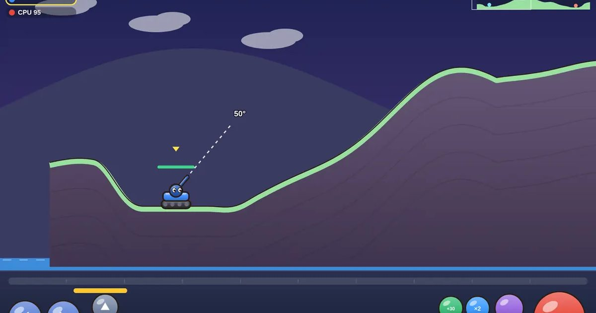

포탄 대작전
Tank Barrage
턴제 포격 · 1P/2P무료설치 없음폰 · PC
▶ 지금 바로 하기로그인 없이 브라우저에서 바로 시작돼요
어떤 게임인가요?
각도를 잡고 힘을 모아 쏘면 땅이 움푹 파여요! 바람을 읽고, 연료로 자리를 옮기고, 탱크마다 다른 특수탄으로 상대를 구덩이에 빠뜨리세요.
목표 · 번갈아 포탄을 쏴서 상대 탱크를 먼저 쓰러뜨리거나 물에 빠뜨리면 승리. CPU를 이기면 연승이 쌓여요.
이렇게도 찾아요
탱크 게임포탄 게임포격 게임턴제 탱크tank gameartillery gameturn based tank
#탱크게임 #포격게임 #턴제게임 #추억의게임
게임 방법
- ◀ ▶로 움직이면 연료가 줄어요(매 턴 절반 충전). 가파른 비탈은 못 올라가요.
- ▲ ▼ 또는 화면을 끌어서 각도. 「발사」를 누르고 있으면 힘이 0→100→0으로 오르내려요. 주황 선은 지난번 힘.
- 포탄이 떨어진 자리는 땅이 파여요. 밑의 땅이 사라지면 탱크가 떨어지고, 높이 떨어지면 피해, 물까지 떨어지면 끝!
- 바람은 매 턴 바뀌어요. 깃털호는 바람을 절반만 받아요.
등장하는 것들
- 번개호 · 삼연발 · 작은 포탄 3발이 부채꼴로
- 바위호 · 땅 꺼트리기 · 큰 구덩이로 상대를 떨어뜨려요
- 깃털호 · 통통탄 · 두 번 튕긴 뒤 크게 터져요
- 불꽃호 · 불비 · 꼭대기에서 불덩이 5개로
- ×2 · +30 · 두 번 쏘기 · 체력 30 회복 (한 판에 하나씩)
 1 to 50
1 to 50 장기
장기 무당벌레 오락실
무당벌레 오락실 성 지키기
성 지키기 통통 배구
통통 배구 과일 베기
과일 베기